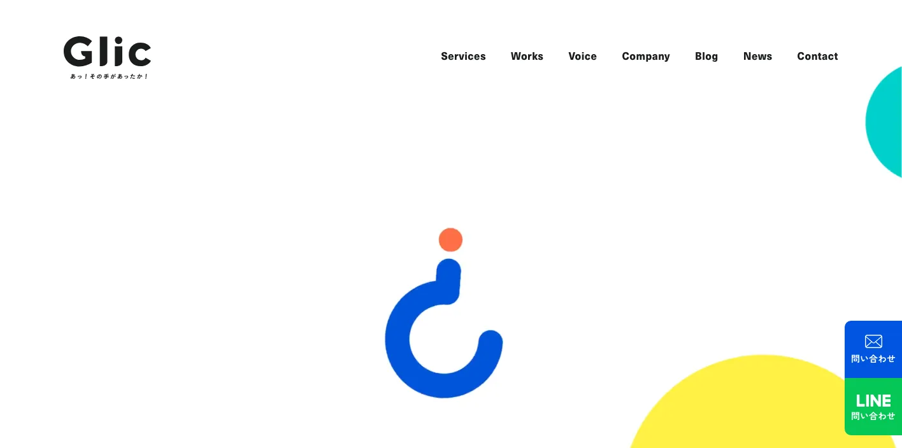
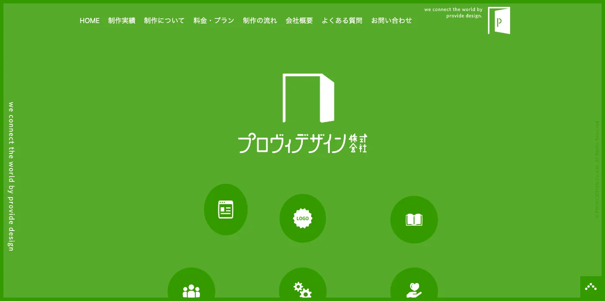
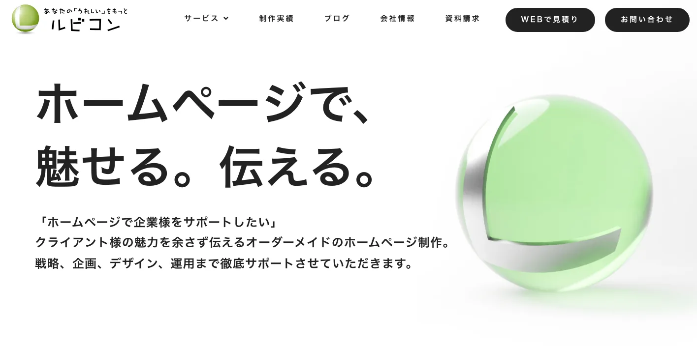
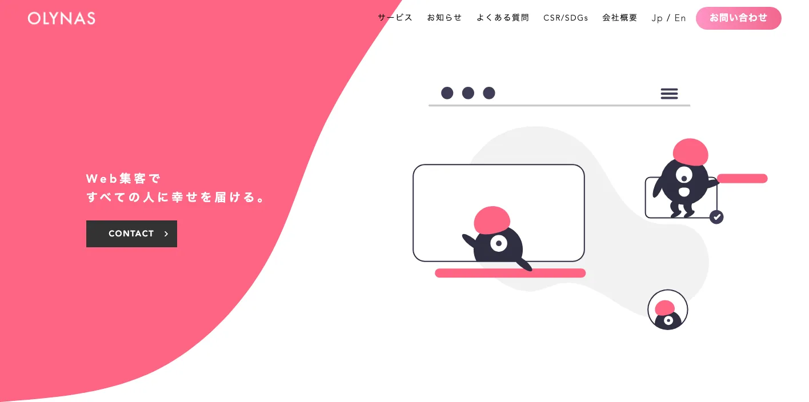
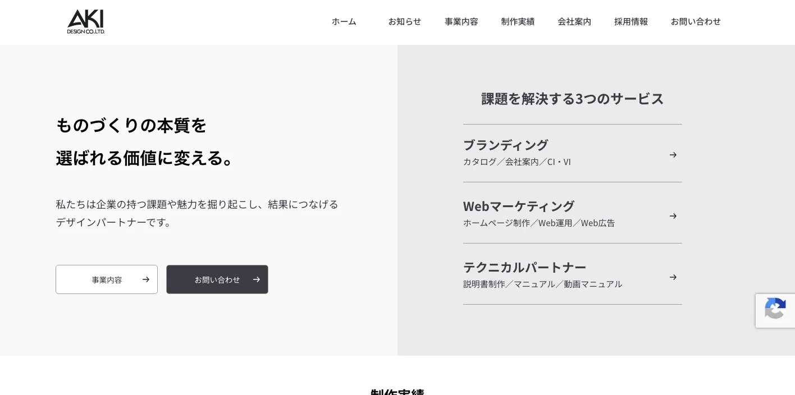
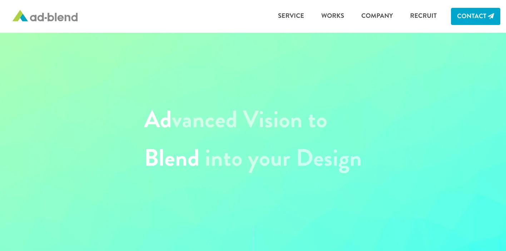
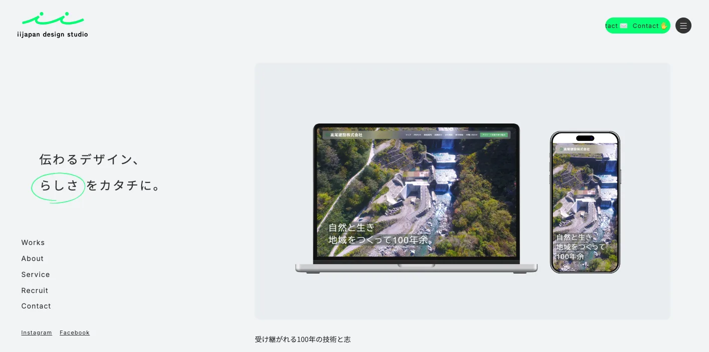
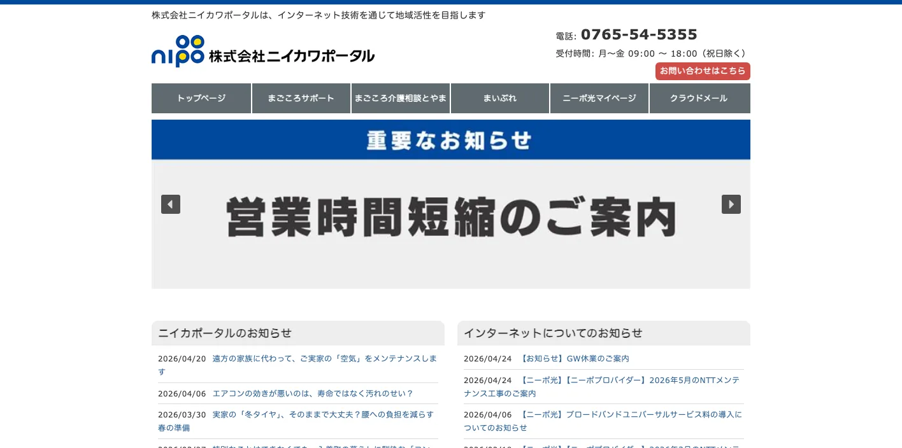
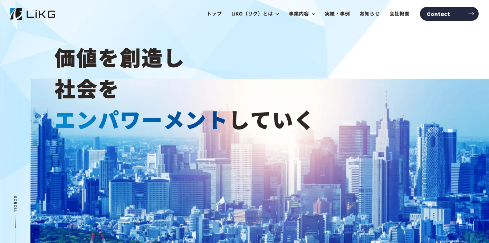

富山県でおすすめのLLMO会社10選｜費用相場と選び方もわかりやすく解説

富山県でLLMO会社を選ぶときは、「富山のWeb制作会社」や「SEO会社」という探し方だけでは少し足りません。富山市の行政・医療・大学・製薬、高岡市のものづくり、射水市の港湾・物流、黒部市・魚津市の東部商圏、砺波市・南砺市の観光と地域ブランド、立山黒部や富山湾の観光では、AI検索で聞かれる質問がかなり違うからです。
富山県の住民基本台帳人口は、令和7年1月1日時点で1,008,536人、世帯数は436,122世帯です。2024年経済構造実態調査の富山県分では、製造業の事業所数は2,931事業所、従業者数は122,482人、製造品出荷額等は4兆1,337億58百万円でした。富山県を一言でまとめるより、人口が集まる地域、製造業が強い地域、観光で選ばれる地域を分けて情報設計する必要があります。
この記事では、富山県でLLMOに取り組むときに比較したい会社、選び方、費用相場をまとめます。LLMOの基本から確認したい方はLLMO対策の基礎記事、近隣県も見たい方は新潟県の比較記事や群馬県の比較記事も参考になります。自社サイトの現状を先に見たい場合は無料LLMO診断から確認できます。
目次

富山県でおすすめのLLMO会社10選
今回は、富山県内に拠点があり、ホームページ制作、SEO、Webマーケティング、広告、システム開発、デザイン、運用改善などの公開情報を確認しやすい会社を中心に、LLMOを明示している全国対応会社も補完的に加えました。富山県内でLLMO専業を前面に出している会社はまだ多くないため、AI検索対策そのものだけでなく、サイト構造、FAQ、地域ページ、事例、写真、採用、EC、製品情報、更新体制まで支援できる会社を比較対象にしています。
富山県では、富山市の都市型サービス、高岡・射水のものづくりと物流、黒部・魚津の東部商圏、砺波・南砺の観光、医薬品・化学・アルミ・機械のBtoB、白えび・ホタルイカ・ます寿しなどの食品ブランドまで、必要な情報が変わります。まずは表で向いている企業を確認し、その後に各社の特徴を見てください。
| 会社名 | 拠点性 | 向いている企業 | 支援の軸 |
|---|---|---|---|
| グリーク株式会社 | 富山市 | Web制作、マーケティング、広告、SNSまでまとめて相談したい企業 | ホームページ制作・Webマーケティング・Web広告・SNS運用 |
| 株式会社プロヴィデザイン | 富山市 | デザイン性と更新しやすいWebサイトを両立したい企業 | ホームページ制作・CMS・Webシステム・運用 |
| 株式会社ルビコン | 富山市 | SEOや集客を意識したサイト制作を相談したい企業 | Web制作・SEO・Webマーケティング・運用改善 |
| 合同会社オリナス | 富山市 | 地域事業者の魅力を整理し、写真や文章で伝えたい企業 | Web制作・デザイン・ブランディング・運用支援 |
| 株式会社アキデザイン | 高岡市 | 高岡・射水・砺波方面で制作と販促物を一体で整えたい企業 | ホームページ制作・グラフィックデザイン・印刷物・販促 |
| 株式会社アドブレンド | 富山市 | Web制作、広告、採用、ブランディングを横断したい企業 | Webサイト制作・広告制作・ブランディング・運用 |
| 株式会社アイアイ・ジャパン | 富山県内対応 | 中小企業のWeb制作、SEO、更新運用を相談したい企業 | ホームページ制作・SEO・保守運用・Web活用支援 |
| 株式会社ニイカワポータル | 新川地域 | 黒部・魚津・滑川・入善・朝日方面の地域発信を強めたい企業 | Web制作・地域ポータル・情報発信・更新支援 |
| 株式会社LiKG | 全国対応 | LLMO診断から記事制作まで任せたい企業 | LLMO診断・LLMO×SEO伴走・記事制作 |
| 株式会社ジオコード | 全国対応 | SEOとAI最適化を実装込みで進めたい企業 | SEO・コンテンツ・AIO/LLMO・実装改善 |
株式会社AIMAは富山本社の会社ではありませんが、全国対応でLLMO支援を提供しています。月額5万円のLLMO支援は初期費用なし・1ヶ月単位で始められ、質問設計、記事制作、引用チェックに絞って実務を進められます。富山市、高岡、射水、黒部、魚津、砺波、南砺のように検索文脈が分かれる場合も、まず無料LLMO診断で優先順位を確認できます。
1. グリーク株式会社

グリーク株式会社は、富山市茶屋町に拠点を置くホームページ制作会社です。公式サイトでは、富山でおすすめのホームページ制作会社として、デザイン性が高く、集客ができるホームページ制作を得意としていることを案内しています。サービスとして、ホームページ制作、マーケティング、Web広告、SNS運用、動画制作、業務システムなどを確認できます。
富山県でLLMOを進める場合、単に見た目のよいサイトを作るだけではなく、富山市の生活商圏、製薬・医療・教育・住宅・観光などの検索意図を、ページ構成やFAQに落とし込む必要があります。グリークは、制作後の活用やWebマーケティングまで含めて相談したい企業に向いています。
2. 株式会社プロヴィデザイン

株式会社プロヴィデザインは、富山市に拠点を置くWeb制作会社です。公式サイトでは、Webサイト制作、CMS、Webシステム、デザイン、運用に関わる情報を確認できます。富山県内の企業サイト、採用サイト、サービスサイトなどで、見やすさと更新しやすさを両立したい場合に比較しやすい会社です。
LLMOでは、AIが読み取りやすい見出し、会社情報、サービス説明、FAQ、事例、構造化データの整備が重要です。プロヴィデザインは、富山市を中心に、医療、教育、士業、住宅、製造、地域サービスなど、情報量の多いサイトを整理したい企業に向いています。
3. 株式会社ルビコン

株式会社ルビコンは、富山市に拠点を置くWeb制作・Webマーケティング系の会社です。公式サイトでは、Webサイト制作、SEO、マーケティング、運用改善に関わる情報を確認できます。AI検索に向けた情報整理では、既存サイトの見直し、集客導線、検索意図に合わせたページ改善が必要になります。
富山県では、富山市だけでなく、高岡、射水、滑川、魚津、黒部、砺波、南砺など、地域名と業種名を組み合わせた検索が起きます。ルビコンは、SEOやサイト運用の観点から、見込み客が比較する前に必要な情報を整えたい企業に向いています。
4. 合同会社オリナス

合同会社オリナスは、富山市を拠点にWeb制作やデザイン、ブランディングに関わる支援を行う会社です。公式サイトでは、地域事業者の魅力を伝えるための制作や情報発信を確認できます。富山県のように、製品やサービスの背景、作り手、地域性が選ばれる理由になりやすい地域では、文章と写真の整理が重要です。
LLMOでは、AIが「なぜこの会社が選ばれるのか」を説明できるように、会社の強み、対応範囲、価格、実績、よくある質問を整理する必要があります。オリナスは、観光、飲食、地域ブランド、専門サービスなど、伝えたい魅力が散らばっている企業に向いています。
5. 株式会社アキデザイン

株式会社アキデザインは、高岡市に拠点を置く制作会社です。公式サイトでは、ホームページ制作、デザイン、販促物に関わる情報を確認できます。高岡市、射水市、砺波市、南砺市の企業にとっては、県西部の商圏やものづくり、観光、地域店舗の文脈を相談しやすい会社です。
AI検索では、チラシやパンフレットに書いていた情報もWeb上で整理されていないと、比較候補に入りにくくなります。アキデザインは、Webサイトと販促物を分けず、企業案内、採用、商品説明、イベント告知、店舗情報を一体で整えたい企業に向いています。
6. 株式会社アドブレンド

株式会社アドブレンドは、富山市に拠点を置く広告・Web制作系の会社です。公式サイトでは、Webサイト制作や広告制作、ブランディング、販促支援に関わる情報を確認できます。LLMOはSEOだけの作業ではなく、会社の見せ方、採用、広告、SNS、オフライン販促とつながるため、横断的な整理が必要です。
富山県では、BtoBの製造業、住宅、不動産、医療、採用、観光施設、地域店舗など、Web以外の接点も成果に影響します。アドブレンドは、Webサイト単体ではなく、広告やブランドの見え方も含めて、AIに引用される情報の土台を整えたい企業に向いています。
7. 株式会社アイアイ・ジャパン

株式会社アイアイ・ジャパンは、Web制作やSEO、運用支援に関わるサービスを案内している会社です。公式サイトでは、ホームページ制作、SEO、保守運用、Web活用支援に関する情報を確認できます。中小企業がLLMOを始めるときは、大きなシステム改修よりも、既存ページの改善、FAQ追加、会社情報の整理から進めるケースが多くなります。
富山県内の店舗や専門サービスでは、料金、対応エリア、駐車場、予約、納期、相談の流れ、担当者の情報など、基本情報が不足しているだけでAIに選ばれにくくなります。アイアイ・ジャパンは、Webの運用を長く見直したい企業に向いています。
8. 株式会社ニイカワポータル

株式会社ニイカワポータルは、新川地域を中心に地域情報発信やWeb制作に関わる会社です。公式サイトでは、地域ポータルやWebに関する情報を確認できます。黒部市、魚津市、滑川市、入善町、朝日町のような県東部では、富山市中心の情報だけでは検索意図を満たせないことがあります。
LLMOでは、地域名、移動、営業時間、観光、生活サービス、採用、地元企業の実績を、AIが読み取りやすい形で出すことが重要です。ニイカワポータルは、新川地域で地域密着の発信を強めたい企業や団体に向いています。
9. 株式会社LiKG

株式会社LiKGは、LLMOコンサルティングを明確に打ち出している全国対応会社です。公式ページでは、LLMO診断、LLMO×SEOコンサルティング、EEAT強化記事制作を案内し、AI OverviewやChatGPTでの露出状況調査、改善レポート、構造化データ改善指示、記事構成作成などを説明しています。
富山県の企業でも、すでにサイトや記事があり、AI検索でどう出ているかを診断したい場合に向いています。医薬品、製造、観光、食品、採用、BtoBの一次情報を持っているのにAI検索で拾われていない会社は、診断から始める価値があります。
10. 株式会社ジオコード

株式会社ジオコードは、SEO対策、コンテンツマーケティング、Web制作、Web広告、AIO・LLMOなどAI最適化まで案内している全国対応会社です。公式サイトでは、SEO・コンテンツ・オウンドメディアからAI最適化まで支援するサービス構成を確認できます。
富山県内でも、県外商圏を持つBtoB企業、製造業、EC企業、採用を強める企業では、地場制作会社だけでなく全国のSEO会社も比較対象になります。ジオコードは、SEOとLLMOを分けず、分析から実装まで任せたい企業に向いています。
富山県のLLMO会社を比較する際のポイント
ここでは、会社紹介で触れた個別の特徴とは別に、富山県でLLMO会社を比較するときの判断軸を整理します。富山県は面積だけを見ると大都市圏ほど広くありませんが、商圏の性格は一枚岩ではありません。富山市中心の都市型需要、高岡・射水のものづくりと物流、黒部・魚津の県東部、砺波・南砺の観光・食品・地域ブランドでは、AIに答えさせるべき内容が変わります。
富山市、高岡市、射水市で検索意図を分けられるか
富山市は県庁所在地で、行政、医療、大学、商業、製薬、BtoBの中心になりやすい地域です。高岡市は伝統産業や製造業、商業、観光の文脈があり、射水市は港湾、物流、住宅、製造、生活商圏の要素が強くなります。AI検索では、同じ「富山県 おすすめ」でも、ユーザーが求める比較軸が変わります。
LLMO会社を選ぶときは、県名を入れたページを作るだけでなく、市ごとの役割を分けて、料金、アクセス、対応範囲、事例、FAQを整理できるかを見てください。医療、士業、住宅、教育、美容、介護、採用のような地域密着型ビジネスでは、この分け方が問い合わせの質に直結します。
医薬品、化学、アルミ、機械のBtoB情報を説明できるか
富山県は「薬都」として知られ、医薬品や化学に関わる企業が多い地域です。加えて、アルミ、金属、機械、電子部品など、BtoBの製造業も重要です。2024年経済構造実態調査の富山県分でも、製造業は県内雇用と出荷額で大きな存在感があります。
製造業のLLMOでは、一般向けの読み物だけでは不十分です。設備、素材、加工範囲、品質管理、対応ロット、納入実績、技術資料、認証、取引条件を、専門性を保ったまま分かりやすく整理する必要があります。AIが技術領域を誤解しないよう、製品ページ、事例、FAQ、会社情報をつなげて設計できる会社を選びましょう。
立山黒部、富山湾、五箇山の観光質問を更新できるか
富山県の観光では、立山黒部アルペンルート、黒部峡谷、富山湾、雨晴海岸、五箇山、砺波チューリップ、宇奈月温泉、富山市内観光など、季節や交通に左右される質問が多くなります。「雪の大谷はいつ見られるか」「車なしで行けるか」「子連れで回れるか」「雨の日でも楽しめるか」「富山湾の食はいつが旬か」といった質問は、古い情報のままだとユーザーの不満につながります。
観光事業者や宿泊施設がLLMO会社を選ぶなら、記事制作だけでなく、営業時間、予約、交通、イベント、天候、写真、周辺観光、外国人向け情報を更新できる体制を見てください。AI検索では、最新性と具体性が弱いページは、候補に入っても選ばれにくくなります。
白えび、ホタルイカ、ます寿し、薬売り文化を商品説明に落とせるか
富山県には、白えび、ホタルイカ、ます寿し、昆布、かまぼこ、薬売り文化、ガラス、鋳物、木工など、地域性の強い商品や文化があります。ECや観光土産では、産地、旬、保存方法、食べ方、ギフト、発送、アレルギー、法人利用、歴史、作り手の情報が比較材料になります。
LLMO会社には、商品ページをきれいに作るだけでなく、買う前の不安をFAQや比較表に落とし込む力が必要です。地名だけを差し替えた記事ではなく、商品ごとの質問、地域ブランドの背景、店舗や工場の一次情報を出せるかを確認してください。
人口規模がコンパクトな県で、広域対応と深い専門性を両立できるか
富山県は、首都圏や関西圏のように膨大な検索ボリュームだけを前提にする地域ではありません。そのため、薄い地域ページを大量に作るより、商圏ごとに深い情報を出したほうが現実的です。富山市、高岡市、射水市、黒部市、魚津市、砺波市、南砺市を分けつつ、各ページで同じ説明を繰り返さない設計が重要です。
採用でも同じです。勤務地、通勤、雪、暮らし、福利厚生、教育制度、工場や店舗の雰囲気、Uターン・Iターンの不安を具体的に説明できる会社を選ぶと、AI検索だけでなく求職者にも伝わりやすくなります。
県内密着か全国対応かを、作業内容で選べるか
富山県内の会社は、現地取材、撮影、地域の商圏理解、ものづくりや観光の肌感覚に強いことが多いです。一方で、LLMO専業やSEO大手は、AI検索の診断、構造化データ、既存記事の改善、全国競合の比較に強い場合があります。
どちらが正しいというより、作業内容で選ぶのが現実的です。現場撮影や地域取材が必要なら県内会社、AI検索での露出状況を分析したいならLLMOを明示している会社、両方必要なら県内制作会社と全国LLMO会社の分担も選択肢になります。
参考：富山県内 市町村住民基本台帳人口、2024年経済構造実態調査 製造業事業所調査結果（富山県分抜粋）、産業別統計表
富山県のLLMO会社に依頼する費用相場
LLMOの費用は、診断だけなのか、記事制作まで含むのか、サイト改修や撮影まで必要なのかで変わります。富山県では、医薬品、化学、アルミ、機械、食品、観光、採用、地域店舗、BtoBのように、追加で作るべきページやFAQの量が業種によって大きく変わります。
| 依頼内容 | 費用目安 | 富山県での考え方 |
|---|---|---|
| LLMO診断・AI検索の現状確認 | 無料〜10万円前後 | 自社名、地域名、業種名でAIにどう出るかを見る段階 |
| 小規模なSEO・LLMO運用 | 月額5万円〜15万円前後 | FAQ、地域ページ、既存記事改善を小さく回す段階 |
| 伴走型のSEO・LLMO支援 | 月額15万円〜30万円前後 | 競合調査、構成作成、構造化データ、改善提案、定例を含む段階 |
| サイト制作・改修込み | 30万円台〜150万円超 | 撮影、採用、EC、予約、製品情報、システム連携の有無で広がる |
| 製造業・観光・多拠点の本格運用 | 月額30万円以上 | 複数市町村、製品カテゴリ、営業資料、事例制作まで必要な段階 |
まずは診断だけなら無料〜10万円前後から始めやすい
最初にやるべきことは、AI検索で自社がどう扱われているかを確認することです。自社名、サービス名、地域名、競合名、料金、評判、比較などで質問し、AIが何を根拠に回答しているかを見ます。
富山県の場合、「富山市 歯科 おすすめ」「高岡市 工務店 比較」「射水市 物流 会社」「黒部 観光 子連れ」「富山 アルミ加工 小ロット」「南砺 五箇山 宿泊」のように、地名と目的の組み合わせが多くなります。いきなり記事を増やす前に、どの質問で選ばれるべきかを決めると無駄が減ります。
小さく始めるなら月額5万円〜15万円帯が入口になる
小規模事業者や地域店舗なら、最初から大きな予算を組む必要はありません。既存ページの見出し改善、FAQ追加、会社情報の整理、地域ページの追加、Googleビジネスプロフィールの見直しだけでも、AIが理解しやすい状態に近づきます。
富山市、高岡、射水、魚津、黒部、砺波、南砺の生活商圏では、料金、予約、駐車場、駅やインターからの距離、対応エリア、納期、相談の流れ、雪の日の対応など、基本情報が問い合わせ前の不安を減らします。この価格帯では、派手な施策よりも、AIが参照できる情報の欠落を埋めることが現実的な成果になります。
伴走支援の中心帯は月額15万円〜30万円前後
毎月改善を続けるなら、月額15万円〜30万円前後が一つの中心帯です。この価格帯では、競合調査、AI検索での露出調査、記事構成、既存ページ改善、構造化データ、レポート、定例打ち合わせまで含まれやすくなります。
富山県の企業では、製造、医薬品、食品、観光、医療福祉、採用など、社内にある一次情報の棚卸しが必要な業種ほど伴走支援が向いています。社内に担当者がいるなら、LLMO会社には戦略と構成を任せ、社内で技術情報や現場情報を出す形にすると費用対効果が上がります。
制作・撮影・EC・採用まで含めると総額は広がる
ホームページを作り直す、写真撮影をする、動画を作る、採用ページを整える、ECや予約システムとつなぐ場合は、費用が大きく変わります。富山県では、観光施設、旅館、食品メーカー、薬品・製造業、医療、住宅、地域店舗で、写真や事例が成果に直結しやすいです。
制作費だけを見るのではなく、公開後に誰が更新するのか、FAQを追加できるのか、AI検索での出方を見て直せるのかを確認してください。安く作っても、季節情報や製品情報が古くなればLLMOの効果は落ちます。
県内広域を狙うなら地域ページとFAQの量を見積もる
富山県はコンパクトに見えても、富山市、高岡、射水、黒部、魚津、砺波、南砺ではユーザーの移動や比較対象が変わります。富山市だけを狙う場合と、県西部・県東部・観光地まで狙う場合では、必要なページ数が変わります。
ただし、地名だけを差し替えた薄いページは逆効果です。各地域の商圏、交通、観光、産業、利用者の不安、提供できるサービスの違いまで書けるかが重要です。見積もりでは「何ページ作るか」だけでなく、「各ページで何を答えるか」まで確認しましょう。
参考：グリーク株式会社｜ホームページ制作、株式会社LiKG｜LLMOコンサルティング、株式会社ジオコード｜SEO対策・AI最適化
富山県のLLMO会社に関するよくある質問
富山県のLLMO会社に依頼する意味はありますか？
あります。富山県は人口規模がコンパクトな一方、富山市の都市機能、高岡・射水のものづくり、黒部・魚津の東部商圏、砺波・南砺の観光と地域ブランドで検索意図が変わります。地域名、産業、観光、採用、BtoBの一次情報をAIに理解される形で整理する意味があります。
富山県内の会社でないとLLMOは任せられませんか？
必ずしも県内本社である必要はありません。現地取材や撮影、地域の商圏理解が必要なら県内会社が向きます。一方で、AI検索での露出診断、構造化データ、既存記事改善、全国競合との比較は、LLMOを明示している全国対応会社も選択肢になります。
富山市・高岡市・射水市では、何を分けて考えるべきですか？
富山市は行政、医療、大学、製薬、都市型サービスの中心です。高岡市は伝統産業やものづくり、射水市は港湾、物流、住宅、製造の文脈が強くなります。同じ富山県でも、AIに答えさせたい質問とページで出すべき情報を分ける必要があります。
富山県の製造業でもLLMOは必要ですか？
必要です。医薬品、化学、アルミ、金属、機械、電子部品などでは、設備、素材、対応範囲、品質管理、納入実績、技術資料をAIが誤解しない形で整理することが重要です。BtoBでは製品ページ、事例、FAQの精度が問い合わせ前の比較に直結します。
立山黒部・富山湾・五箇山など観光地でもLLMOは使えますか？
使えます。観光では、季節、天候、交通、予約、混雑、子連れ、外国人対応、周遊ルート、食、宿泊の質問が多くなります。古い営業情報やアクセス情報をAIに拾われないよう、施設ページ、FAQ、イベント情報を更新できる体制が重要です。
白えび、ホタルイカ、ます寿し、薬都ブランドでもLLMOは効果がありますか？
効果があります。産地、旬、保存方法、食べ方、ギフト、発送、アレルギー、法人利用、歴史、品質管理など、購入前の質問が多いからです。商品ページとFAQ、比較表、作り手情報を整えると、AI検索で説明されやすくなります。
富山県のLLMO費用はどれくらい見ておけばよいですか？
診断だけなら無料から10万円前後、小さな運用なら月額5万円から15万円前後、伴走支援は月額15万円から30万円前後が目安です。撮影、取材、サイト改修、製品ページ、採用、EC、多拠点展開まで含めると総額は大きく変わります。
成果が出るまでの期間はどれくらいですか？
一般的には3か月から6か月が目安です。既存サイトの情報量、競合の強さ、FAQや事例の整備状況、構造化データ、更新体制によって変わります。短期で断定せず、AI検索での見え方を観測しながら改善する進め方が現実的です。
富山県でLLMO会社を選ぶなら、商圏と産業ごとの質問を分けて設計しましょう
富山県のLLMO会社選びでは、富山市、高岡、射水、黒部、魚津、砺波、南砺を同じ文章でまとめないことが重要です。都市型サービス、医薬品、化学、アルミ、機械、食品、観光、採用、地域店舗では、AI検索で聞かれる質問がかなり違います。
まずは、自社が「近隣の生活者」を狙うのか、「県内広域の見込み客」を狙うのか、「製造・観光・食品・採用など目的検索」を狙うのかを決めてください。そのうえで、戦略だけでなく、ページ改修、記事制作、FAQ、構造化データ、写真、更新運用まで実行できる会社を選ぶと前に進めやすいです。迷う場合は、LLMO対策の基礎を確認し、必要なら無料LLMO診断やお問い合わせから、自社がどの質問で選ばれるべきかを整理していきましょう。